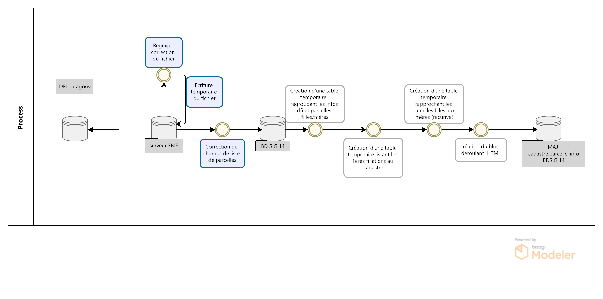
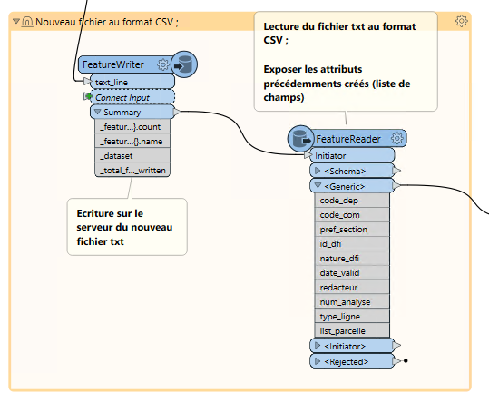
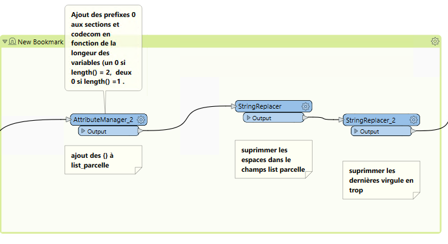

III- Ajouter un onglet “Filiation parcellaire” à la pop-up cadastre de Lizmap
Les fichiers départementaux des documents de filiation informatisés (DFI) des parcelles permettent de consulter l’historique des parcelles cadastrales.
Ce fichier recense les modifications parcellaires réalisées depuis l’informatisation de leur procédure de mise à jour qui, selon les départements, est intervenue entre les années 1980 à 1990. L’origine des différentes mises à jour (documents d’arpentage, croquis de conservation, remaniement…) ainsi que leurs dates sont renseignées.
Ce fichier sont disponibles sur le site datagouv.fr
Le fichier est au format txt. Le point-virgule est le caractère séparateur. La taille des champs est fixe.
Chaque lot d’analyse d’un même document de filiation fait l’objet de deux lignes successives :
celle de type 1 pour toutes ses parcelles mères (il peut n’y en avoir aucune dans le cas d’extraction du domaine non cadastré) ;
celle de type 2 pour toutes ses parcelles filles (il peut n’y en avoir aucune dans le cas de passage au domaine public).

A partir de ce fichier, le pôle SIG du Département du Calvados, propose de consulter la généalogie d’une parcelle.
1- Traitement et import FME des données
Le fichier DFI est difficilement exploitable en brut.
Le fichier sépare chaque valeur par un ; .
Le nombre de valeurs de parcelles est variable, ce qui implique un nombre de champ variable.
Le workbench FME se trouve ici
1.1 Regexp : correction du fichier
Dans un premier temps, afin de pouvoir correcetement lire le fichier, les données parcelles sont réunies en listes dans un seul champ à l’aide d’expression régulière et de l’ETL FME.
140;001;000;0000299;1;19900305;XXXXXREDACTEURDUDOCUMENTXXXX;00001;2;A0297;A0298;
Identifier les listes de parcelles après le 9e ;
(?:[^;]*;){9}(.*)
match1 : 140;001;000;0000299;1;19900305;XXXXXREDACTEURDUDOCUMENTXXXX;00001;2;A0297;A0298;
group1 : A0297;A0298;
Extraire le résultat du group1 dans un attribute creator
@Value(list_parcelles{0}.part)
Supprimer les valeurs du group du premier match
match1 : 140;001;000;0000299;1;19900305;XXXXXREDACTEURDUDOCUMENTXXXX;00001;2
Remplacer les ; du resultat de liste de parcelles extrait par des ,
group1 : A0297,A0298,
Concatener le match 1 et les résultas extraits
140;001;000;0000299;1;19900305;XXXXXREDACTEURDUDOCUMENTXXXX;00001;2;A0297, A0298,
On ajoute ensuite une ligne avec la liste des nom de champ
1.2 Lecture du CSV
Après écriture du fichier, on lit le fichier CSV en exposant la liste des attributs souhaités.
1.3 Remplacer : seconde correction du fichier
On effectue une dernière correction du fichier avant intégration dans la base de données.
Ajout des préfixes 0 aux sections et codecom en fonction de la longueur des variables (un 0 si length() = 2, deux 0 si length() =1 .
supprimmer les espaces dans le champ list parcelle
supprimmer la dernière virgule en trop dans le champ list parcelle
2- Champ HTML historique déroulant
L’objectif est ici de pouvoir consulter l’historique des filiations à l’échelle de la parcelle.
L’utilisateur peut, en cliquant sur une parcelle, consulter la généalogie de sa parcelle, connaitre sa/ses parcelles méres (antérieur), ses parcelles soeurs (issues de la/des même(s) parcelle(s) mère(s)) et connaître la nature de la filiation.
Pour cela on utilise une fonction postgresql/gis pour alimenter la table parcelle_info du cadastre et une mise en forme du formulaire QGIS en HTML pour publication sur le portail cartographique Lizmap.
2.1 - Fonction postgresql/gis
On crée le champ contenant l’html des déroulants détaillant les filiations du plus récent au plus ancien
alter table cadastre.parcelle_info add column tab_filiation text;
On lance ensuite une fonction postgresql/gis dont le code SQL se trouve ICI
Dans un premier temps, la fonction met en place une table temporaire (que l’on va indexer) regroupant ligne par ligne les infos dfi, la nature détaillée des dfi, la liste des parcelles mères et la liste des parcelles filles associées (filiation)
create UNLOGGED TABLE temp_parcelles_dfi as SELECT a.code_com AS code_com, a.pref_section AS pref_section, a.id_dfi, a.num_analyse, a.date_valid, case when a.nature_dfi = '1' then 'arpentage' when a.nature_dfi = '2' then 'croquis de conservation' when a.nature_dfi = '4' then 'remaniement' when a.nature_dfi = '5' then 'arpentage numerique' when a.nature_dfi = '6' then 'lotissement numérique' when a.nature_dfi = '7' then 'lotissement' when a.nature_dfi = '8' then 'rénovation'end as nature_dfi,-- détail de la nature en fonction du code_nature a.list_parcelle AS parcelles_meres, -- liste des parcelles mères quand type_ligne = 1 b.list_parcelle AS parcelles_filles --liste des parcelles filles associées aux parcelles mères quand type_ligne = 2 (jointure sur date, code com, section, id_dfi et numero d'analyse) FROM ref_foncier.parcelles_dfi a, ref_foncier.parcelles_dfi b WHERE a.type_ligne = '1'::text AND b.type_ligne = '2'::text AND concat(a.date_valid, a.code_com, a.pref_section, a.id_dfi, a.num_analyse) = concat(b.date_valid, b.code_com, b.pref_section, b.id_dfi, b.num_analyse);
Création d’une table temporaire listant les premières filiations liées aux parcelles actuelles du cadastre
create UNLOGGED TABLE temp_parcelles_init as with parcelle_init as ( -- liste des parcelles du cadastre qui sont comprises dans les parcelles filles dfi select a.code_com, a.date_valid, a.nature_dfi, a.pref_section, a.id_dfi, a.num_analyse, a.parcelles_meres, -- Conservation des parcelles mères dfi dont les filles comprennent une parcelle du cadastre concat('{', b.ccosec, b.dnupla, '}')::text[] as parcelles_filles, -- Parcelle du cadastre associée aux parcelles filles dfi replace(a.parcelles_filles::text,concat( b.ccosec, b.dnupla), '') as parcelles_soeurs -- Supprimer (remplacer par '') la parcelle du cadastre associée de la liste des parcelles filles pour trouver les parcelles soeurs from temp_parcelles_dfi a, cadastre.parcelle b where concat(b.ccosec, b.dnupla) = ANY(a.parcelles_filles::text[]) -- jointure sur les num parcelle et section cadastre dans les parcelles filles dfi and a.code_com::text = b.ccocom -- et sur une même commune and a.pref_section::text = translate(b.ccopre, ' ', '0') ) -- et sur un même prefixe de séction select a.code_com, a.date_valid, a.nature_dfi, a.pref_section, a.parcelles_meres::text[], a.parcelles_filles::text[] , replace(translate(parcelles_soeurs::text, '{}', ''), ',', ' ') as parcelles_soeurs, -- transformation en format liste des listes de parcelles 1 as num_filiation, -- création d'un numéro de filiation concat(translate(a.parcelles_filles::text, '{}','') ) as id_filiation ---conserver le numéro de parcelle fille initial en format txt from parcelle_init a ;
Création d’une table temporaire rapprochant les parcelles filles aux listes de parcelles mères (récursive)
CREATE UNLOGGED TABLE temp_parcelle_filiation as with recursive search_meres (code_com, date_valid, nature_dfi, pref_section, parcelles_meres , parcelles_filles, parcelles_soeurs, num_filiation, id_filiation) as (-- paramètres récursive select a.* --selection des filiations initiales au cadastre from temp_parcelles_init a UNION -- union pour la recursivité select c.code_com,c.date_valid, c.nature_dfi, c.pref_section, c.parcelles_meres::text[], -- Conservation des parcelles mères dfi dont les filles comprennent d'autres parcelles filles dfi array(select unnest(c.parcelles_filles::text[]) intersect select unnest( d.parcelles_meres::text[])) as parcelles_filles ,---- selectionner les parcelles filles dfi comprises dans les listes de parcelles mères initiales array(select unnest(c.parcelles_filles::text[]) except select unnest( d.parcelles_meres::text[]))::text as parcelles_soeurs, ---- selectionner les parcelles filles dfi non comprises dans les listes de parcelles mères initiales pour trouver les parcelles soeurs d.num_filiation + 1 as num_filiation, -- ajout de 1 au numéro de filiation d.id_filiation --- conserver le numéro de parcelle cadastre initial en txt from temp_parcelles_dfi c, search_meres d where d.parcelles_meres::text[] && c.parcelles_filles::text[] -- jointure des parcelles dfi aux parcelles initiales quand au moins une parcelle de la liste parcelle mère initiale est comprise dans la liste parcelle fille dfi AND concat(d.code_com, d.pref_section) = concat(c.code_com, c.pref_section)), -- et sur le code commune et prefixe de section result as (select row_number() over() as fid, a.* from search_meres a ) --- selectionner le resultat de la recursive et ajouter un id unique
… Suite de la table : création du bloc déroulant HTML avec historique des filiations de parcelles dans un champ text avec num parcelle associé
select row_number() over() as id, --- creation du html concat(-- bloc html creant la table deroulante '<table class = "t2"> <thead> <tr> <th>date de filiation </th> <th>nature de la filiation</th> </tr> </thead> <tbody>', string_agg(-- aggregation des infos dfi filles, meres et soeurs : date, parcelles ordonnées par le numéro de filiation ('<tr> <td><label for="row'||fid || '"></label>' || date_valid::text::date || '</td> <td>'|| nature_dfi || '</td> </tr><tr> <td colspan="6"> <input id="row'||fid||'" type="checkbox"> <table> <tr> <th>Nouvelle(s) parcelle(s)</th> <th>Parcelle(s) soeur(s)</th> <td>Ancienne(s) parcelle(s)</td> </tr> <tr> <th>'||translate(parcelles_filles::text, '{}', '')||'</th> <th>'||translate(parcelles_soeurs::text, '{}', '')||'</th> <td>'||translate(parcelles_meres::text, '{}', '')||'</td> </tr> </table>' ) , '</td> </tr>' order by num_filiation asc),'</tbody> </table>') as tab_filiation, concat('140',code_com, pref_section, id_filiation) as num_parcelle -- creation du num parcelle : cod dep + codcom + pref_section + num_parcelle cadastre initial from result a group by code_com, pref_section, id_filiation; -- grouper par parcelle, pref section et num parcelle cadastre initial
Mise à jour des champs HTML de la table parcelle_info grâce aux identifiants parcelles de la table précédement créée.


{kind=link}
{kind=link}
{kind=link}
{kind=link}